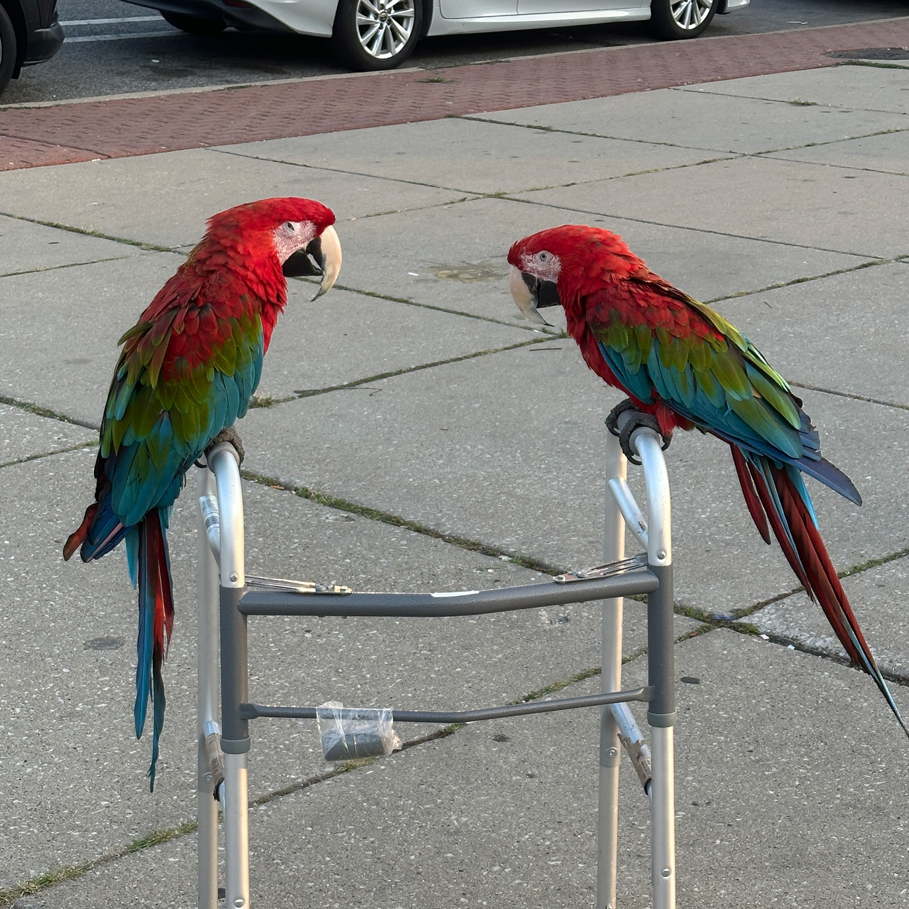
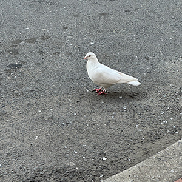
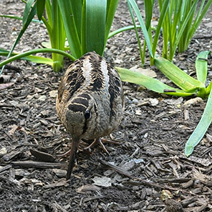
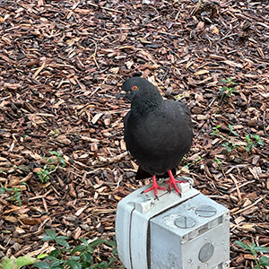
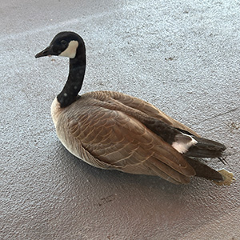
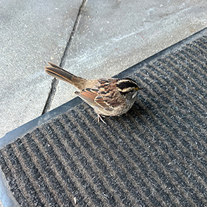
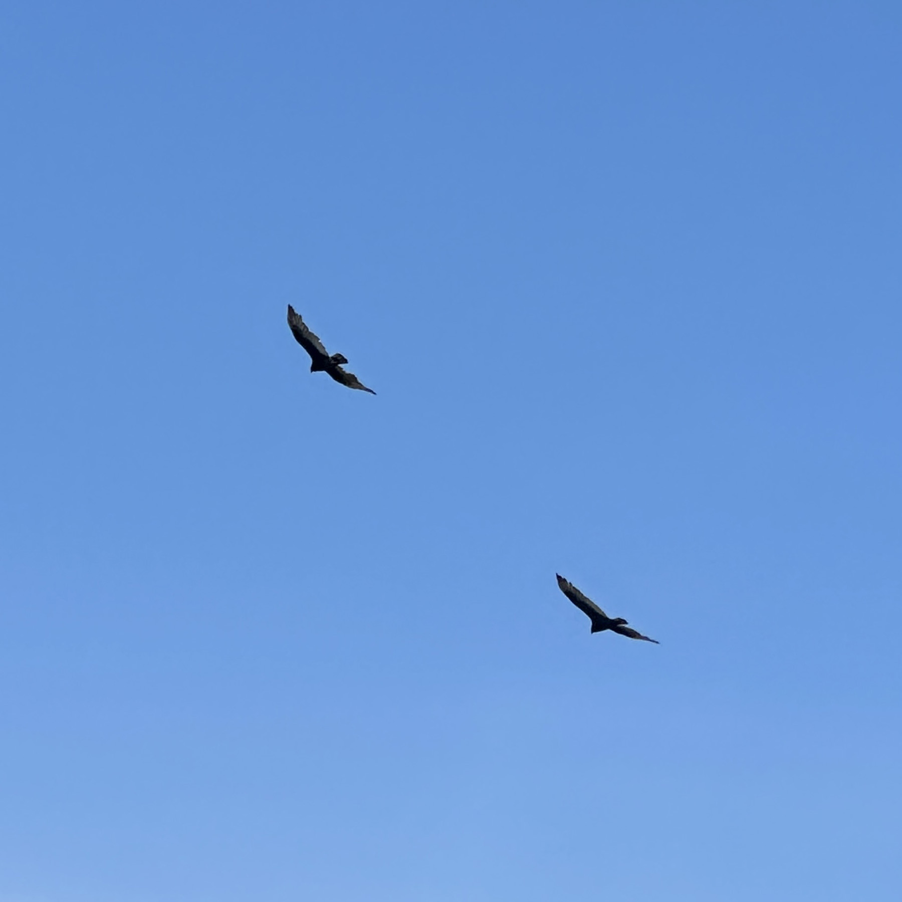
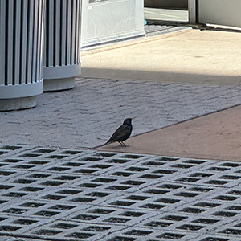

Birds and Human Perception
Preface
This page focuses on human perception of different birds rather than organization through scientific classification or habitat. This involves looking more at cultural significance as well as human attitude. Some birds are seen in a positive light displaying ideas of peace, beauty, and companionship. However, others are ignored or seen as pests or dirty.
The first group focuses on birds that are appreciated and valued. These include parrots, cardinals, ducks, doves, goldfinches, woodcocks, and snowbirds. These birds are very frequently seen in books, art, and everyday life as cute and friendly. The second group more closely focuses on birds that are overlooked and discarded by humans. These are pigeons, sparrows, geese, black crows, starlings, and turkey vultures. Despite their ecological importance, these birds are thought of as dirty, aggressive, or even associated with death.
By comparing these two groups side by side, this page encourages viewers to rethink their perception of these beautiful birds. The goal is to image all of these birds in a positive light to redirect the attention away from cultural assumptions and more towards the beauty of the birds themselves. This page invites users to reflect on how our perception shapes the way we see the natural world.
Positively Valued / Symbolic Birds
This group includes birds associated with peace, beauty, and companionship.

Parrots

Cardinal

Ducks

White Dove

Goldfinch

Woodcock

Snowbird
Overlooked / Negatively Perceived Birds
This group includes birds often dismissed or disliked, despite their ecological importance.

Pigeon

Black Crow

Canadian Goose

Sparrow

Turkey Vultures

Starling
Data: Perception vs Ecological Role
| Bird | Public Perception | Ecological Role |
|---|---|---|
| Dove | Peaceful | Seed dispersal |
| Parrot | Colorful, intelligent | Seed dispersal, forest regeneration |
| Duck | Friendly | Aquatic ecosystem balance |
| Pigeon | Pest | Seed dispersal, urban adaptation |
| Sparrow | Common | Insect control |
| Goose | Aggressive | Grassland maintenance |
| Vulture | Associated with death | Scavenger |
| Cardinal | Colorful, symbolic | Seed dispersal, insect control |
| Goldfinch | Cheerful, bright | Seed specialist |
| Woodcock | Viral sensation, uncommon | Soil ecosystem, indicator of healthy forest |
| Snowbird | Calm, winter arrival | Ground seed eater |
| Black Crow | Associated with death | Scavenger, highly intelligent |
| Starling | Invasive, noisy | Insect control, invasive competitor |